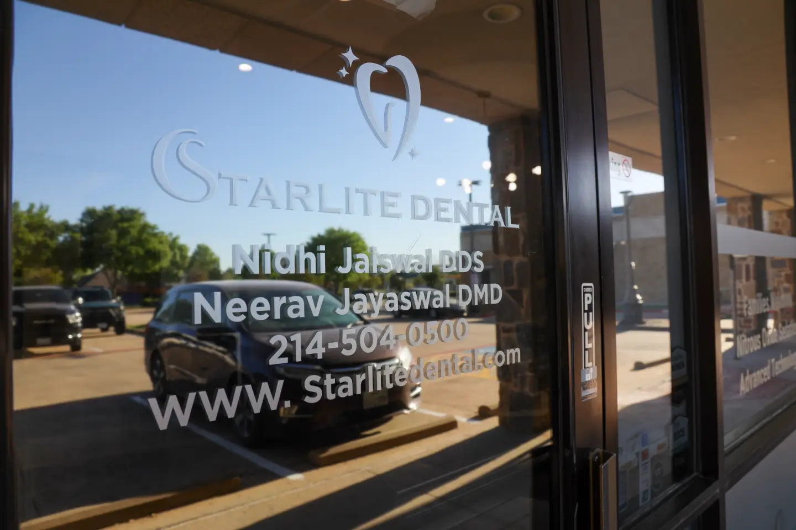
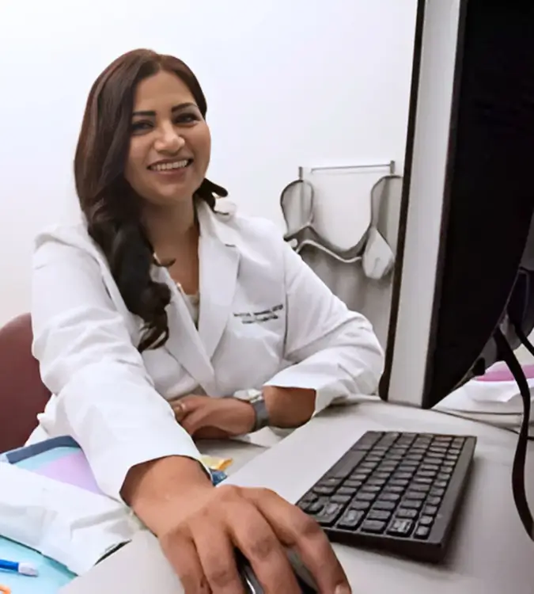

Knocked-out tooth
A knocked-out adult tooth needs urgent attention. Tell us when and how it happened, whether the tooth is loose or missing, and if there is bleeding. Do not put a baby tooth back in its socket.
Starlite Dental
Tooth pain, swelling or a broken tooth? We provide emergency dentistry in McKinney. Call our team to explain what’s wrong and discuss your next step.
Tooth pain, swelling or injury
Severe or persistent tooth pain, swelling or a tooth injury needs dental assessment. These common problems are reasons to call our office.
A knocked-out adult tooth needs urgent attention. Tell us when and how it happened, whether the tooth is loose or missing, and if there is bleeding. Do not put a baby tooth back in its socket.
A small chip and a large break may need different care. Describe any pain when biting, sensitivity or sharp edge so the team understands the damage.
Severe or continuing tooth pain needs dental assessment. Tell us how long it has hurt and whether you have swelling. Pain alone does not tell us the cause.
A suspected abscess or infection needs prompt assessment. Mention swollen gums or facial swelling, fever, a bad taste, or swelling that is getting worse.
A lost filling or crown, a loose tooth, or bleeding after dental work also deserves a call. Describe any pain, sharp edge, and how much or how long you have been bleeding. The dentist assesses the problem before recommending a repair.
A filling or crown may repair some damage. Root canal treatment may be considered for damaged or infected tissue inside a tooth. If a tooth cannot be restored, extraction or referral may be appropriate.
The dentist will explain what can be done now, whether a specialist referral is needed and the aftercare for your treatment. No single procedure is right for every emergency.
Tell the team if another dentist has taken recent X-rays. Ask whether they should be sent before your visit; the dentist may still need new images.
Your visit
Your emergency visit starts with a focused examination and any X-rays the dentist needs to assess the problem.
Arrange an urgent dental visit.
Explain which tooth or side hurts, when it started, and any swelling, injury or relevant medical history. A focused exam assesses that problem area; a full checkup looks at your wider dental health. Digital X-rays and an intraoral camera can help the dentist assess and explain the concern.
The dentist explains the findings and suitable care. The team goes through the treatment plan, expected charges and options before you agree to treatment.
Treatment may be possible at that visit or arranged for another appointment, depending on the findings and available time. The dentist may recommend treatment, stabilization or specialist referral, and explains any aftercare or follow-up.

5100 Eldorado Parkway
Regular office hours. Call before coming so the team can discuss your next step.
An emergency examination and treatment are separate costs. Your estimate depends on the problem, the imaging needed and the care you choose.
Before you agree to treatment, request an itemized estimate, including what you are expected to pay yourself.

A person, not just a painful tooth
Dr. Nidhi Jaiswal, DDS, cares for patients at Starlite Dental in McKinney.
Dr. Jaiswal earned her DDS at VCU School of Dentistry. Her approach emphasizes listening to anxious patients and explaining their care.
If fear or a difficult past experience has made you put off a visit, tell the team when you call. Start with the problem you have now and the questions you need answered.
Meet Dr. Jaiswal and the teamBefore your visit
Bring photo ID, dental insurance details if you have them, a list of medicines and relevant medical history. Tell the team about allergies or recent dental treatment. Bring a broken crown or restoration if you have it.
A dentist needs to assess the cause of pain or swelling. Antibiotics are not the answer to every tooth problem and do not replace treatment of its cause. The dentist determines whether medication is appropriate.
Wear a mouthguard for sports, avoid chewing ice and hard candy, keep regular dental checkups and address small problems before they become bigger ones. Not every injury or emergency is preventable.
Tell us what’s happening
Call our McKinney office at (214) 504-0500 to discuss your urgent dental problem.